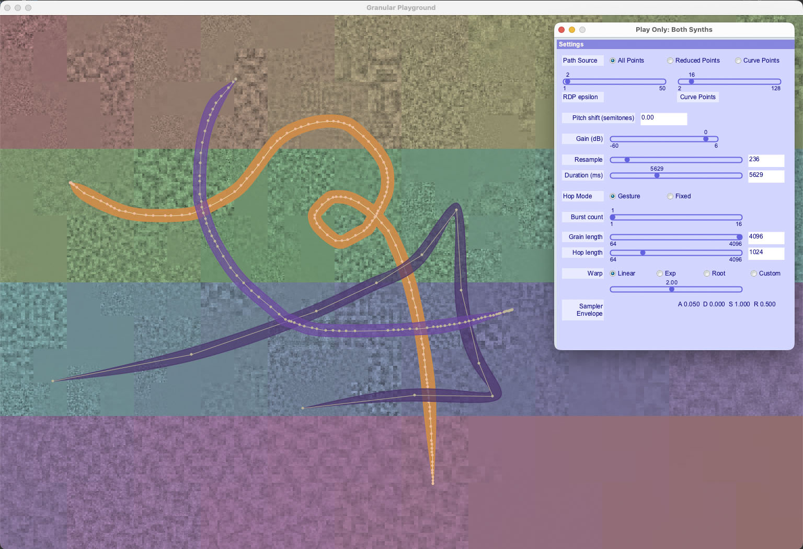

Class TutorialOne_05_GesturePlayground
- All Implemented Interfaces:
processing.core.PConstants
QUICK START

- Launch the sketch. A display window and a palette of Graphical User Interface (GUI) controls appears.
The display window has an audio file preloaded. The grayscale values in the image are transcoded audio
samples. An overlaid rainbow spectrum traces the "signal path", which maps an audio signal to the image
pixels. The signal path is created by the PixelMapGen
multigenand managed by the PixelAudioMappermapper. - Drawing is already turned on, so go ahead and drag the mouse to draw a line. As in
TutorialOne_03_Drawing, a brushstroke appears when you release the mouse. TutorialOne_03_Drawing gave you limited control over the attributes of the brushstroke and its associated audio parameters. In GesturePlayground, you can control nearly all the available parameters with the control palette. - At the top of the control palette, you'll find Path Source radio buttons and sliders for setting the geometry of the brush curve. When the curve is set to Reduced Points or Curve Points, the epsilon slider will allow you to visualize changes in the curve. For the curve points representation of the curve, the Curve Points slider will add or subtract subdivision points.
- The GUI palette displays controls for the current audio synthesis instrument. Press the 't' key to change the instrument. The control palette will reflect the changes. The control palette provides three play modes: one for editing granular synthesis parameters, another for the sampler synthesizer, and a "play only" mode where you can play both instruments but don't have editing enabled.
- The controls for the Sampler are fairly simple. You can change the number of points in the curve
with the geometry controls. You can also change the duration of the gesture and the number of
points in it with the Resample and Duration sliders. Finally, there's a Sampler Envelope menu
that will change the ADSR envelope of each sampler event point. The Duration (ms) control below
it sets the duration of a single click event. When
isAdjustEnvelopeis true (the default, toggled with the 'E' key), brush event durations are calculated from the gesture timing. When it is false, the Duration (ms) control sets both click and brush event durations. - The Granular Synth has all the controls of the Sampler synth except for the envelopes, plus
many controls for granular synthesis:
- The Hop Mode radio buttons determine if the duration of the granular event is determined by the gesture timing data in the brushstroke's PACurveMaker instance, or by the Grain Length and Hop Length sliders.
- Burst Count sets the number of linear grains at each event point. Its effect is to expand the sound of each grain.
- Grain Length and Hop Length sliders control the spacing of the grains. Hop Length is only used for Fixed Hop Mode. Grain and Hop durations are in milliseconds.
- The Warp radio buttons and slider control non-linear timing changes to the gesture. Experiment to find out how they work.
- There are many key commands too, including the 'o' command to load a new audio files. Some
commands are particularly useful with granular synthesis:
- The 'q' command key will calculate the optimal number of grains in a gesture (usually in GESTURE Path Mode) and update the control palette. This can provide smooth granular synthesis even as it preserves the timing characteristic of the gesture.
- The 'c' command key will print configuration data to the console.
- The 'x' command key deletes the brush you are hovering over, if it is editable.
- The 'w' command key swaps the instrument type of the brush you are hovering over and changes edit mode to match.
About GesturePlayground
GesturePlayground uses a GUI to provide a tour of the usage and properties of the
AudioBrush subclasses GranularBrush and SamplerBrush,
the GestureSchedule class, and the Sampler and Granular audio synthesis
instruments PASamplerInstrumentPool and PAGranularInstrumentDirector.
An AudioBrush combines a PACurveMaker and a GestureGranularConfig.Builder.
PACurveMaker models gestures, one of the core concepts of PixelAudio. In its simplest
encoded form, the PAGesture interface, a gesture consists of an array of points
and an array of times. The times array records the times when something as-yet-unspecified
will happen at the corresponding point in the points array. The times array and the points
array must be the same size.
In my demos for PixelAudio, what happens at a point is typically an audio event and an
animation event. A very specific sound happens at every point in the bitmap image because
bitmap locations map onto audio buffer indices with a one-to-one correspondence. The mapping
is generated by a PixelMapGen instance and managed by a PixelMapper instance. Gestures over
the 2D space of an image become paths through audio buffers. The audio buffer is accessed
either by a granular synthesis engine or by a sampling synthesizer. For the granular synth, a
gesture corresponds to a non-linear traversal of an audio buffer, potentially as a continuous
sequence of overlapping grains with a single envelope. The sampling synthesizer treats each
point as a discrete event with its own envelope. Depending on how gestures and schedules are
structured, the two synthesizers can sound very similar, but there are possibilities in each
that the other cannot realize. As you might expect, GranularBrush implements granular synth
events and SamplerBrush implements sampler synth events. Both rely on PACUrveMaker which, in
addition to capturing the raw gesture of drawing a line, provides methods to reduce points
and times, create Bezier paths, and generate event schedules. PACurveMaker scheduling data
can be modified by changing duration, interpolating samples, or by non-linear time warping.
GesturePlayground uses GestureScheduleBuilder to interpolate and warp time and
point lists.
The parameters for gesture modeling, granular and sampling synthesis, time and sample
interpolation, and audio events are modeled in the GUI, which uses
GestureGranularConfig.Builder gConfig to track its current state. A
GestureGranularConfig instance is associated with each AudioBrush. When you click on an
AudioBrush and activate it, its configuration data is loaded to the GUI and you can edit it.
It will be saved to the brush when you select another brush or change the edit mode. When a
brush is activated with a click, the schedule is built from its PACurveMaker and
GestureGranularConfig.Builder instance variables:
GestureSchedule schedule = scheduleBuilder.build(gb.curve(), cfg.build(), audioOut.sampleRate());
Code Details
The calling chain for a GranularBrush:
mouseClicked()callsscheduleGranularBrushClick(gb, x, y);.- In
scheduleGranularBrushClick(...)we get a reference to the audio bufferbufand then use the PACurveMaker objectgb.curve()andgb.snapshot()to build aGestureSchedule,sched. schedgets timing and location information for the gesture fromgb.curve()and modifies it with the settings from the control palette which are storedgb.snapshot().- We port the granular synthesis parameters from the brush to a
GestureGranularParamsobject, and then callplayGranularGesture(buf, sched, gParams)to play the granular synth. - We also call
storeGranularCurveTL(...), which sets up UI animation events to track the grains. - Parameter
bufis the audio signal that is the source of our grains, parameterschedprovides the points and times for grains and parameter,paramsprovides the core parameters for granular synthesis. playGranularGesture()builds arrays for buffer position and pan for each individual grain and then callsgDir.playGestureNow(buf, sched, params, startIndices, panPerGrain)to play the PAGranularInstrumentDirector granular synth. The 'p' command key can toggle per-grain pitch jitter, which callsplayGestureNow()in a slightly different way. SeeplayGranularGesture()for details.PAGranularInstrumentDirectorhas its own calling chain that goes all the way down to the individual sample level using the Minim library's UGen interface. If you just want to play music, you'll probably never have to deal with the hierarchy of classes directly. The variousplayGesture*methods inPAGranularInstrumentDirectorcan address the timing, buffer position, panning, pitch, and amplitude of each individual grain. If you're curious, there's an outline of the audio chain inPAGranularInstrumentDirector.
Part of the calling chain for a SamplerBrush:
mouseClicked()callsscheduleSamplerBrushClick(sb, x, y).- In
scheduleSamplerBrushClick()we get array of points on the curve withgetPathPoints(sb)and then usesb.snapshot()andscheduleBuilder.build()to build aGestureSchedule - Finally, we pass the schedule, configuration snapshot, and a small time offset to
storeSamplerCurveTL(), an array ofTimedLocationobjects that is checked at every pass through thedraw()loop and posts both Sampler instrument triggers and animation events. Unlike the Granular instrument, which requires very accurate timing, the Sampler synth requires less precision, so we can handle it through the UI frames. Sample-accurate timing is a topic for another as-yet-unreleased example sketch. - The
runSamplerBrushEvents()method executes the UI brushstroke animation and the Sampler audio events. Sampler events all pass throughpool.playSample(samplePos, samplelen, amplitude, env, pitch, pan).
See PASamplerInstrumentPool or
Issue #45 Noise in Sampler Instruments
for information about suggested poolSize and maxVoices usage with PASamplerInstrumentPool.
KEY COMMANDS Press ' ' to spacebar triggers a brush if we're hovering over a brush, otherwise it triggers a point event. Press 'c' or 'C' to print the current configuration status to the console. Press 't' to switch between Granular and Sampler editing and playing. Press 'z' to change the drawing mode of the hover brush. Press 'd' to toggle doPlayOnDraw to play when a drawing gesture ends or not. Press 'E' to toggle calculating envelope duration from brush points or setting it to envDurationMs. Press 'p' to jitter the pitch of granular gestures. Press 'k' to apply the hue and saturation in the colors array to mapImage (not to baseImage). Press 'K' to apply hue and saturation in colors to baseImage and mapImage. Press 'l' or 'L' to toggle loading data to both image and audio buffers when you open either an image or an audio file. Press 'f' or 'F' to toggle verbose output to the console. Press 'o' to open an audio file. Press 'r' or 'R' to reset synths to defaults Press 'q' to automatically set an active GRANULAR brush to have an optimized number of samples. Press 's' to save display image to a PNG file. Press 'S' to save audio buffer to a .wav file. Press 'x' to delete the current active brush shape or the oldest brush shape. Press 'X' to delete the most recent brush shape. Press 'h' or 'H' to print help.
Note that animation is not enabled in this tutorial. See
Bagatelle for a performance-oriented application with a GUI, presets, and networking.-
Nested Class Summary
Nested ClassesModifier and TypeClassDescription(package private) static final class(package private) static classSimple container for a brush hit-test result.(package private) static enum(package private) static interfaceFuture Development: Barebones interface for "something that happens at a certain point", and then in AudioScheduler the time-when-something-happens gets connected to the-room-where-it-happens and the entire cast of Hamilton steps in.(package private) static final class -
Field Summary
FieldsModifier and TypeFieldDescriptionprivate AudioBrush(package private) GranularBrush(package private) int(package private) SamplerBrush(package private) int(package private) g4p_controls.GOptionArrayList<processing.core.PVector>(package private) int(package private) int(package private) g4p_controls.GOption(package private) floatprivate final AtomicLong(package private) File(package private) int(package private) String(package private) String(package private) String(package private) intprivate final AtomicLong(package private) ddf.minim.AudioOutput(package private) AudioScheduler<TutorialOne_05_GesturePlayground.Happening>(package private) float[](package private) processing.core.PImage(package private) int(package private) int(package private) PABoundsPolicy.PABoundaryMode(package private) PABoundsPolicy(package private) float(package private) int(package private) g4p_controls.GLabel(package private) g4p_controls.GSlider(package private) PixelAudioMapper.ChannelNames(package private) int(package private) int[](package private) g4p_controls.GTextArea(package private) g4p_controls.GPanel(package private) g4p_controls.GWindow(package private) Stringprocessing.core.PVector(package private) static final int(package private) static final int(package private) static final int(package private) g4p_controls.GOption(package private) g4p_controls.GLabel(package private) g4p_controls.GSliderint(package private) g4p_controls.GOption(package private) String(package private) String(package private) float(package private) final GestureGranularConfig.Builder(package private) float(package private) final GestureGranularConfig.Builder(package private) int(package private) int(package private) int(package private) boolean(package private) booleanintfloat(package private) TutorialOne_05_GesturePlayground.DrawingMode(package private) g4p_controls.GTextField(package private) g4p_controls.GLabel(package private) g4p_controls.GSlider(package private) static final String(package private) int(package private) g4p_controls.GTextField(package private) g4p_controls.GLabel(package private) g4p_controls.GSlider(package private) g4p_controls.GLabel(package private) g4p_controls.GDropList(package private) g4p_controls.GLabel(package private) g4p_controls.GCheckbox(package private) boolean(package private) int(package private) int(package private) String[]float(package private) g4p_controls.GLabel(package private) int(package private) g4p_controls.GOption(package private) float(package private) g4p_controls.GOption(package private) g4p_controls.GLabel(package private) g4p_controls.GSlider(package private) GestureGranularConfig.Builder(package private) int(package private) int(package private) g4p_controls.GOptionint(package private) GestureGranularParams(package private) int(package private) g4p_controls.GTextField(package private) g4p_controls.GLabel(package private) g4p_controls.GSlider(package private) ArrayList<TimedLocation>(package private) g4p_controls.GTextField(package private) g4p_controls.GLabel(package private) g4p_controls.GSliderintint(package private) int(package private) intfloat[](package private) ArrayList<GranularBrush>(package private) ADSRParamsfloatfloat(package private) boolean(package private) float(package private) g4p_controls.GTextField(package private) g4p_controls.GLabel(package private) g4p_controls.GSlider(package private) g4p_controls.GToggleGroup(package private) g4p_controls.GLabel(package private) int(package private) floatprivate AudioBrushAudioBrush wraps a PACurveMaker (gesture) and a GestureGranularConfig.Builder (granular synthesis parameters)(package private) int(package private) intprivate int(package private) File(package private) int(package private) String(package private) String(package private) String(package private) int(package private) boolean(package private) boolean(package private) boolean(package private) boolean(package private) booleanboolean(package private) boolean(package private) boolean(package private) boolean(package private) boolean(package private) boolean(package private) boolean(package private) boolean(package private) g4p_controls.GOption(package private) int(package private) int(package private) float(package private) processing.core.PImage(package private) PixelAudioMapper(package private) int(package private) float(package private) int(package private) ddf.minim.MinimMinim audio library(package private) MultiGen(package private) int(package private) boolean(package private) int(package private) float(package private) g4p_controls.GToggleGroup(package private) g4p_controls.GLabel(package private) g4p_controls.GLabel(package private) float(package private) g4p_controls.GTextField(package private) PixelAudio(package private) ddf.minim.MultiChannelBuffer(package private) boolean(package private) ArrayList<TimedLocation>int(package private) PASamplerInstrumentPool(package private) int(package private) g4p_controls.GSlider(package private) g4p_controls.GOption(package private) int(package private) int(package private) float(package private) g4p_controls.GTextField(package private) g4p_controls.GLabel(package private) g4p_controls.GSlider(package private) int(package private) int(package private) float(package private) ArrayList<SamplerBrush>(package private) ADSRParams(package private) float(package private) float(package private) ArrayList<TimedLocation>(package private) GestureScheduleBuilder(package private) int(package private) int(package private) int(package private) int(package private) int(package private) g4p_controls.GOptionint(package private) int(package private) float(package private) int(package private) boolean(package private) boolean(package private) boolean(package private) int(package private) com.hamoid.VideoExport(package private) g4p_controls.GToggleGroup(package private) g4p_controls.GLabel(package private) g4p_controls.GSliderFields inherited from class processing.core.PApplet
args, ARGS_BGCOLOR, ARGS_DISABLE_AWT, ARGS_DISPLAY, ARGS_EDITOR_LOCATION, ARGS_EXTERNAL, ARGS_FULL_SCREEN, ARGS_HIDE_STOP, ARGS_LOCATION, ARGS_PRESENT, ARGS_SKETCH_FOLDER, ARGS_STOP_COLOR, ARGS_UI_SCALE, ARGS_WINDOW_COLOR, DEFAULT_HEIGHT, DEFAULT_WIDTH, disableAWT, displayHeight, displayWidth, dmouseX, dmouseY, emouseX, emouseY, exitCalled, EXTERNAL_MOVE, EXTERNAL_STOP, finished, firstMouse, focused, frameCount, frameRate, frameRateLastNanos, g, height, insideDraw, javaPlatform, javaVersion, javaVersionName, key, keyCode, keyEvent, keyPressed, keyRepeatEnabled, looping, matchPatterns, mouseButton, mouseEvent, mousePressed, mouseX, mouseY, pixelDensity, pixelHeight, pixels, pixelWidth, platform, pmouseX, pmouseY, ratioLeft, ratioScale, ratioTop, recorder, redraw, rheight, rmouseX, rmouseY, rwidth, surface, useNativeSelect, width, windowX, windowYFields inherited from interface processing.core.PConstants
ADD, ALPHA, ALT, AMBIENT, ARC, ARGB, ARROW, BACKSPACE, BASELINE, BEVEL, BEZIER_VERTEX, BLEND, BLUR, BOTTOM, BOX, BREAK, BURN, CENTER, CHATTER, CHORD, CLAMP, CLOSE, CODED, COMPLAINT, CONTROL, CORNER, CORNERS, CROSS, CURVE_VERTEX, CUSTOM, DARKEST, DEG_TO_RAD, DELETE, DIAMETER, DIFFERENCE, DILATE, DIRECTIONAL, DISABLE_ASYNC_SAVEFRAME, DISABLE_BUFFER_READING, DISABLE_DEPTH_MASK, DISABLE_DEPTH_SORT, DISABLE_DEPTH_TEST, DISABLE_KEY_REPEAT, DISABLE_NATIVE_FONTS, DISABLE_OPENGL_ERRORS, DISABLE_OPTIMIZED_STROKE, DISABLE_STROKE_PERSPECTIVE, DISABLE_STROKE_PURE, DISABLE_TEXTURE_MIPMAPS, DODGE, DOWN, DXF, ELLIPSE, ENABLE_ASYNC_SAVEFRAME, ENABLE_BUFFER_READING, ENABLE_DEPTH_MASK, ENABLE_DEPTH_SORT, ENABLE_DEPTH_TEST, ENABLE_KEY_REPEAT, ENABLE_NATIVE_FONTS, ENABLE_OPENGL_ERRORS, ENABLE_OPTIMIZED_STROKE, ENABLE_STROKE_PERSPECTIVE, ENABLE_STROKE_PURE, ENABLE_TEXTURE_MIPMAPS, ENTER, EPSILON, ERODE, ESC, EXCLUSION, FX2D, GIF, GRAY, GROUP, HALF_PI, HAND, HARD_LIGHT, HINT_COUNT, HSB, IMAGE, INVERT, JAVA2D, JPEG, LANDSCAPE, LEFT, LIGHTEST, LINE, LINE_LOOP, LINE_STRIP, LINES, LINUX, MACOS, MACOSX, MAX_FLOAT, MAX_INT, MIN_FLOAT, MIN_INT, MITER, MODEL, MODELVIEW, MOVE, MULTIPLY, NORMAL, OPAQUE, OPEN, OPENGL, ORTHOGRAPHIC, OTHER, OVERLAY, P2D, P3D, PATH, PDF, PERSPECTIVE, PI, PIE, platformNames, POINT, POINTS, POLYGON, PORTRAIT, POSTERIZE, PROBLEM, PROJECT, PROJECTION, QUAD, QUAD_BEZIER_VERTEX, QUAD_STRIP, QUADRATIC_VERTEX, QUADS, QUARTER_PI, RAD_TO_DEG, RADIUS, RECT, REPEAT, REPLACE, RETURN, RGB, RIGHT, ROUND, SCREEN, SHAPE, SHIFT, SOFT_LIGHT, SPAN, SPHERE, SPOT, SQUARE, SUBTRACT, SVG, TAB, TARGA, TAU, TEXT, THIRD_PI, THRESHOLD, TIFF, TOP, TRIANGLE, TRIANGLE_FAN, TRIANGLE_STRIP, TRIANGLES, TWO_PI, UP, VERTEX, WAIT, WHITESPACE, WINDOWS, X, Y, Z -
Constructor Summary
Constructors -
Method Summary
Modifier and TypeMethodDescriptionvoidAdd the controls to the control palette.voidaddDrawingPoint(int x, int y) While user is dragging the mouse and mode == Mode.DRAW_EDIT_GRANULAR or DRAW_EDIT_SAMPLER, accumulates new points to allPoints and event times to allTimes.voidadjustAudioGain(float g) Adjusts audioOut.gain.voidallOption_clicked(g4p_controls.GOption source, g4p_controls.GEvent event) (package private) intAppend a granular brush and return its new index.(package private) intAppend a sampler brush and return its new index.int[]applyColor(int[] colorSource, int[] graySource, int[] lut) Utility method for applying hue and saturation values from a source array of RGB values to the brightness values in a target array of RGB values, using a lookup table to redirect indexing.voidApplies the Hue and Saturation of pixel values in the colors[] array to mapImage and baseImage.int[]applyColorShifted(int[] colorSource, int[] graySource, int[] lut, int shift) Utility method for applying hue and saturation values from a source array of RGB values to the brightness values in a target array of RGB values, using a lookup table to redirect indexing, taking into account any pixels that were shifted.voidarcLengthTimeOption_clicked(g4p_controls.GOption source, g4p_controls.GEvent event) voidaudioFileSelectedWrite(File selection) static voidblendInto(ddf.minim.MultiChannelBuffer dest, ddf.minim.MultiChannelBuffer src, float weight, boolean normalize, float targetDB) Blends audio data from buffer "src" into buffer "dest" in place.buildGranSynth(ddf.minim.AudioOutput out, ADSRParams env, int numVoices) Initializes a PAGranularInstrument.voidburstSlider_changed(g4p_controls.GSlider source, g4p_controls.GEvent event) intcalcGranularOptHints(String tag, int N, float Tms, int hopSamples, int grainLenSamples, float sr, List<processing.core.PVector> scheduledPoints, float targetSpacingPx, float wt, float ws, StringBuffer sb) Calculate optimal configuration settings for a granular brush.intintcalcSampleLen(int dur, float mean, float variance) calculateEnvelopeDb(float gainDb, int totalSamples, float sampleRate) Calculate an envelope of length totalSamples.calculateEnvelopeLinear(float linear, float totalMs) Calculate an envelope of length totalSamples.voidWrapper method for Processing's selectInput command(package private) static intclampInt(int v, int lo, int hi) intclipToHeight(int y) intclipToWidth(int x) voidvoidWrites the mapImage, which may change with animation, to the baseImage, a reference image that usually only changes when a new file is loaded.voidcommitNewBaseImage(processing.core.PImage img) Copies the supplied PImage to mapImage and baseImage, sets totalShift to 0 (the images are identical).(package private) intcomputeEnvDurationMs(GestureSchedule sched, String envName, int fallbackMs) Calculates a Sampler event duration from the average interval between scheduled points.voidcontrolPanel_hit(g4p_controls.GPanel source, g4p_controls.GEvent event) voidvoidCreate the GUI control palette.voidCreate all the controls in the control palette.voidCreate a separate window for the GUI control palette.voidCreate all the GUI controls.voidcurveOption_clicked(g4p_controls.GOption source, g4p_controls.GEvent event) voidcurvePointsSlider_changed(g4p_controls.GSlider source, g4p_controls.GEvent event) voidcustomWarpOption_clicked(g4p_controls.GOption source, g4p_controls.GEvent event) (package private) static voiddebugIndexHeadroom(float[] buf, int[] startIndices, GestureGranularParams ggp) (package private) static voidvoiddraw()voiddrawBrushes(List<? extends AudioBrush> brushes, int readyColor, int hoverColor, int selectedColor) Iterates over a brush list and draws the brushstrokes stored in each PACurveMaker in the list.voidIterates over brushShapesList and draws the brushstrokes stored in each PACurveMaker in the list.voiddrawCircle(int x, int y) Draws a circle at the location of an audio trigger (mouseDown event).voiddurationSlider_changed(g4p_controls.GSlider source, g4p_controls.GEvent event) (package private) voidPrepares Granular instruments and assets(package private) voidPrepares Sampler instruments and assetsvoidenvDuration_changed(g4p_controls.GSlider source, g4p_controls.GEvent event) voidenvelopeMenu_clicked(g4p_controls.GDropList source, g4p_controls.GEvent event) (package private) static booleanenvEquals(ADSRParams a, ADSRParams b) (package private) intenvMenuIndex(String name) (package private) StringenvNameFor(ADSRParams env) (package private) static ADSRParamsvoidexpWarpOption_clicked(g4p_controls.GOption source, g4p_controls.GEvent event) voidfileSelected(File selectedFile) callback method for chooseFile(), handles standard audio and image formats for Processing.(package private) TutorialOne_05_GesturePlayground.BrushHitvoidfitToBrush_clicked(g4p_controls.GCheckbox source, g4p_controls.GEvent event) voidfixedOption_clicked(g4p_controls.GOption source, g4p_controls.GEvent event) (package private) static Stringfmt(float v, int decimals) (package private) StringformatEnv(ADSRParams env) voidgainSlider_changed(g4p_controls.GSlider source, g4p_controls.GEvent event) (package private) float[]generateJitterPitch(int length, float deviationPitch) voidgestureOption_clicked(g4p_controls.GOption source, g4p_controls.GEvent event) int[]getColors(int size) Generates an array of rainbow colors using the HSB color space.processing.core.PVectorgetCoordFromSignalPos(int pos) Calculates the display image coordinates corresponding to a specified audio sample index.(package private) ArrayList<processing.core.PVector>Provides the list of points for a brush in its assigned PathMode representation.intgetSamplePos(int x, int y) Calculates the index of the image pixel within the signal path, taking the shifting of pixels and audioSignal into account.voidgrainLengthField_changed(g4p_controls.GTextField source, g4p_controls.GEvent event) voidgrainLengthSlider_changed(g4p_controls.GSlider source, g4p_controls.GEvent event) voidgranDuration_changed(g4p_controls.GSlider source, g4p_controls.GEvent event) voidhandleClickOutsideBrush(int x, int y) Respond to mousePressed events, usually by triggering an eventvoidHandles user's drawing actions, draws previously recorded brushstrokes, tracks and generates animation and audio events.voidhopLengthField_changed(g4p_controls.GTextField source, g4p_controls.GEvent event) voidhopLengthSlider_changed(g4p_controls.GSlider source, g4p_controls.GEvent event) voidimageFileSelectedWrite(File selection) voidInitializes allPoints and adds the current mouse location to it.voidCALL THIS METHOD IN SETUP() Initializes Minim audio library and audio variables.voidInitializes default settings for granular synthesis,defaultGranConfig, and for sampler synthesis,defaultSampConfig.Initializes a PACurveMaker instance with allPoints as an argument to the factory method PACurveMaker.buildCurveMaker() and then fills in PACurveMaker instance variables.voidInitializes drawing and drawing interaction variables.voidInitializes gParamsFixed, a GestureGranularParams instances used for granular point events.voidinitGUI()Initializes the control palette and its draw loop.voidInitializesmapImagewith the colors array, copies it tobaseImage.voidSets up sample-accurate AudioListener called from the Minim audio processing loop.voidInitialize lists of TimedLocation objects, used for animated response to mouse clicks on brushstrokes and outside brushstrokes.(package private) boolean(package private) boolean(package private) boolean(package private) booleanisOverAnyBrush(int x, int y) processing.core.PVectorjitterCoord(int x, int y, int deviationPx) Displaces a supplied point by a random Gaussian variable.voidbuilt-in keyPressed handler, forwards events to parseKey.voidlinearWarpOption_clicked(g4p_controls.GOption source, g4p_controls.GEvent event) voidloadAudioFile(File audFile) Attempts to load audio data from a selected file into playBuffer, then calls writeAudioToImage() to transcode audio data and write it to mapImage.loadGestureSchedule(PACurveMaker brush, GestureGranularConfig snap) Builds aGestureSchedulefor aPACurveMakerbrush and a snapshot of aGestureGranularConfigvoidloadImageFile(File imgFile) Attempts to load image data from a selected file into mapImage, then calls writeImageToAudio() to transcode HSB brightness channel to audio and writes it to playBuffer and audioSignal.loadWordGen(int wordGenW, int wordGenH) Adds PixelMapGen objects to the local variable genList.static voidvoidvoidbooleanmouseInPoly(ArrayList<processing.core.PVector> poly) voidThe built-in mousePressed handler for Processing, used to begin drawing.void(package private) static booleannearlyEqual(float a, float b) static voidnormalize(float[] signal, float targetPeakDB) Normalizes a single-channel signal array to a target RMS level in dBFS (decibels relative to full scale).(package private) voidNormalize config values when converting to GranularBrush.(package private) voidNormalize config values when converting to SamplerBrush.voidparseKey(char key, int keyCode) Handles key press events passed on by the built-in keyPressed method.voidpitchShiftText_changed(g4p_controls.GTextField source, g4p_controls.GEvent event) voidplayGranularGesture(float[] buf, GestureSchedule sched, GestureGranularParams params) Primary method for playing a granular synthesis audio event.intplaySample(int samplePos, int samplelen, float amplitude, float pan) Plays an audio sample with default envelope and stereo pan.intplaySample(int samplePos, int samplelen, float amplitude, ADSRParams env, float pan) Plays an audio sample with a custom envelope and stereo pan.intplaySample(int samplePos, int samplelen, float amplitude, ADSRParams env, float pitch, float pan) Plays an audio sample with with a custom envelope, pitch and stereo pan.booleanpointInPoly(ArrayList<processing.core.PVector> poly, int x, int y) voidpreloadFiles(String path, String fileName) Preload an audio file using a file path and a filename.void(package private) voidprintGOptHints(float alpha) Print suggested values for optimizing grain overlap for a brush.static intquantizeToStep(int value, int step) Quantize an integer to the nearest multiple of step.voidrdpEpsilonSlider_changed(g4p_controls.GSlider source, g4p_controls.GEvent event) voidrdpOption_clicked(g4p_controls.GOption source, g4p_controls.GEvent event) (package private) voidCaching for UI settings, may be superfluous.voidWrites baseImage to mapImage with an index position offset of totalShift.voidRemoves the current active PACurveMaker instance, flagged by a highlighted brush stroke, from brushShapesList, if there is one.(package private) voidremoveGranularBrush(AudioBrush gb, int idx) Remove a granular brush using index when reliable, else by object.voidRemoves the current active PACurveMaker instance, flagged by a highlighted brush stroke, from brushShapesList, if there is one.voidRemoves the newest PACurveMaker instance, shown as a brush stroke in the display, from brushShapesList.voidRemoves the oldest brush in brushShapesList.(package private) voidremoveSamplerBrush(AudioBrush sb, int idx) Remove a sampler brush using index when reliable, else by object.voidrenderAudioToMapImage(PixelAudioMapper.ChannelNames chan, int shift) Transcodes audio data in audioSignal and writes it to color channel chan of mapImage.voidWrites a specified channel of mapImage to audioSignal.(package private) voidreplaceBrush(AudioBrush oldBrush, AudioBrush newBrush, int oldIndex) Remove oldBrush from its current typed list, insert newBrush into the opposite typed list, and preserve hover/active state.voidresampleSlider_changed(g4p_controls.GSlider source, g4p_controls.GEvent event) voidreset(boolean isClearCurves) Reinitializes audio and clears event lists.(package private) voidReset tool config to defaults (copy, so default config never mutates).(package private) voidvoidTracks and runs TimedLocation events in the grainLocsArray list, which is associated with granular synthesis gestures.(package private) voidrunGranularPointEvent(int x, int y) Plays a granular burst and animates a pointvoidTracks and runs TimedLocation events in the timeLocsArray list, which is associated with mouse clicks that trigger audio a the click point.void(package private) voidrunSamplerPointEvent(int x, int y) Plays a sample and animates a pointvoidsaveAudioToFile(float[] samples, float sampleRate, String fileName) Saves audio data to 16-bit integer PCM format, which Processing can also open.voidsaveImageToFile(processing.core.PImage img, String fileName) voidCalls Processing's selectOutput method to start the process of saving the current audio signal to a .wav file.voidCalls Processing's selectOutput method to start the process of saving the mapImage (the offscreen copy of the display image) to a .png file.(package private) voidscheduleGranularBrushClick(GranularBrush gb, int clickX, int clickY) (package private) voidscheduleSamplerBrushClick(SamplerBrush sb, int clickX, int clickY) (package private) voidsetActiveBrush(AudioBrush brush) Assigns a brush to be the current active brush, accessible for editing and other options.(package private) voidsetActiveBrush(AudioBrush brush, int idx) static intsetAlpha(int argb, int alpha) Sets the alpha channel of an RGBA color.intsetAlphaWithBlack(int argb, int alpha) Sets the alpha channel of an RGBA color, conditionally setting alpha = 0 if all other channels = 0.(package private) voidDetermine which controls to enable, based on the drawing mode.(package private) voidSets the drawing mode.voidsettings()voidsetup()voidshowHelp()to generate help output, run RegEx search/replace on parseKey case lines with: // case ('.'): // (.+) // println(" * Press $1 to $2.");voidsquareRootOption_clicked(g4p_controls.GOption source, g4p_controls.GEvent event) voidstop()turn off audio processing when we exitvoidstoreGranularCurveTL(GestureSchedule sched, int startTime, boolean isGesture) voidstoreSamplerCurveTL(GestureSchedule sched, GestureGranularConfig snap, int startTime) Queues Sampler brush events with the duration determined at scheduling time.(package private) voidsyncDrawingModeToBrush(AudioBrush brush) Change the current DrawingMode to suit the brush passed as an argument.(package private) voidSynchronize the control palette knobs to the current gConfig, probably because a brush was selected and made active.(package private) AudioBrushToggle the currently active brush between SamplerBrush and GranularBrush.(package private) AudioBrushtoggleBrushType(AudioBrush brush) Convert a brush to the opposite type, reusing the same PACurveMaker and the same GestureGranularConfig.Builder instance.(package private) AudioBrushToggle the currently hovered brush between SamplerBrush and GranularBrush.(package private) GranularBrushtoGranularBrush(AudioBrush brush) Convert a brush explicitly to GranularBrush.(package private) SamplerBrushtoSamplerBrush(AudioBrush brush) Convert a brush explicitly to SamplerBrush.(package private) voidupdateAudioChain(float[] sig) (package private) voidupdateAudioChain(float[] sig, float bufferSampleRate) Bottleneck "commit" method for audio state.(package private) voidUpdate the hoverBrush and hoverIndex global variables.voidwarpSlider_changed(g4p_controls.GSlider source, g4p_controls.GEvent event) voidwinDraw(processing.core.PApplet appc, g4p_controls.GWinData data) voidwinKey(processing.core.PApplet appc, g4p_controls.GWinData data, processing.event.KeyEvent evt) voidwriteAudioToImage(float[] sig, PixelAudioMapper mapper, processing.core.PImage img, PixelAudioMapper.ChannelNames chan) Transcodes audio data in sig[] and writes it to color channel chan of mapImage using the lookup tables in mapper to redirect indexing.voidwriteAudioToImage(float[] sig, PixelAudioMapper mapper, processing.core.PImage img, PixelAudioMapper.ChannelNames chan, int shift) Transcodes audio data in sig[] and writes it to color channel chan of img using the lookup tables in mapper to redirect indexing.voidwriteImageToAudio(processing.core.PImage img, PixelAudioMapper mapper, float[] sig, PixelAudioMapper.ChannelNames chan, int shift) This method writes a color channel from an image to playBuffer, fulfilling a central concept of the PixelAudio library: image is sound.voidwriteToScreen(String msg, int x, int y, int weight, boolean isWhite) Displays a line of text to the screen, usually in the draw loop.Methods inherited from class processing.core.PApplet
abs, abs, acos, alpha, ambient, ambient, ambient, ambientLight, ambientLight, append, append, append, append, append, append, applyMatrix, applyMatrix, applyMatrix, applyMatrix, applyMatrix, arc, arc, arraycopy, arraycopy, arraycopy, arrayCopy, arrayCopy, arrayCopy, asin, atan, atan2, attrib, attrib, attrib, attribColor, attribNormal, attribPosition, background, background, background, background, background, background, background, beginCamera, beginContour, beginPGL, beginRaw, beginRaw, beginRecord, beginRecord, beginShape, beginShape, bezier, bezier, bezierDetail, bezierPoint, bezierTangent, bezierVertex, bezierVertex, binary, binary, binary, binary, blend, blend, blendColor, blendMode, blue, box, box, brightness, calcSketchPath, camera, camera, ceil, checkAlpha, checkExtension, choice, choice, circle, clear, clip, color, color, color, color, color, color, color, color, colorMode, colorMode, colorMode, colorMode, concat, concat, concat, concat, concat, concat, concat, constrain, constrain, copy, copy, copy, cos, createFont, createFont, createFont, createGraphics, createGraphics, createGraphics, createImage, createInput, createInput, createInputRaw, createOutput, createOutput, createPath, createPath, createPrimaryGraphics, createReader, createReader, createReader, createShape, createShape, createShape, createWriter, createWriter, createWriter, cursor, cursor, cursor, cursor, curve, curve, curveDetail, curvePoint, curveTangent, curveTightness, curveVertex, curveVertex, dataFile, dataPath, day, debug, degrees, delay, dequeueEvents, desktopFile, desktopPath, die, die, directionalLight, displayDensity, displayDensity, dispose, dist, dist, edge, ellipse, ellipseMode, emissive, emissive, emissive, endCamera, endContour, endPGL, endRaw, endRecord, endShape, endShape, exec, exec, exit, exitActual, exitCalled, exp, expand, expand, expand, expand, expand, expand, expand, expand, expand, expand, expand, expand, expand, expand, expand, expand, expand, expand, fill, fill, fill, fill, fill, fill, filter, filter, filter, floor, flush, focusGained, focusLost, frameMoved, frameRate, frustum, fullScreen, fullScreen, fullScreen, fullScreen, get, get, get, getExtension, getGraphics, getMatrix, getMatrix, getMatrix, getSurface, green, handleDraw, handleKeyEvent, handleMethods, handleMouseEvent, hex, hex, hex, hex, hideMenuBar, hint, hour, hue, image, image, image, imageMode, initSurface, insertFrame, isLooping, join, join, keyPressed, keyReleased, keyReleased, keyTyped, keyTyped, launch, lerp, lerpColor, lerpColor, lightFalloff, lights, lightSpecular, line, line, link, listFiles, listFiles, listPaths, loadBytes, loadBytes, loadBytes, loadFont, loadImage, loadImage, loadJSONArray, loadJSONArray, loadJSONObject, loadJSONObject, loadPixels, loadShader, loadShader, loadShape, loadShape, loadStrings, loadStrings, loadStrings, loadStrings, loadTable, loadTable, loadXML, loadXML, log, loop, mag, mag, main, main, main, makeGraphics, map, mask, match, matchAll, max, max, max, max, max, max, method, millis, min, min, min, min, min, min, minute, modelX, modelY, modelZ, month, mouseClicked, mouseDragged, mouseEntered, mouseEntered, mouseExited, mouseExited, mouseMoved, mouseMoved, mousePressed, mouseReleased, mouseWheel, mouseWheel, nf, nf, nf, nf, nf, nf, nfc, nfc, nfc, nfc, nfp, nfp, nfp, nfp, nfs, nfs, nfs, nfs, noClip, noCursor, noFill, noise, noise, noise, noiseDetail, noiseDetail, noiseSeed, noLights, noLoop, norm, normal, noSmooth, noStroke, noTexture, noTint, orientation, ortho, ortho, ortho, parseBoolean, parseBoolean, parseBoolean, parseBoolean, parseByte, parseByte, parseByte, parseByte, parseByte, parseByte, parseByte, parseByte, parseChar, parseChar, parseChar, parseChar, parseFloat, parseFloat, parseFloat, parseFloat, parseFloat, parseFloat, parseFloat, parseInt, parseInt, parseInt, parseInt, parseInt, parseInt, parseInt, parseInt, parseInt, parseInt, parseInt, parseInt, parseJSONArray, parseJSONObject, parseXML, parseXML, pause, perspective, perspective, pixelDensity, point, point, pointLight, pop, popMatrix, popStyle, postEvent, postWindowMoved, postWindowResized, pow, print, print, print, print, print, print, print, print, print, printArray, printCamera, println, println, println, println, println, println, println, println, println, println, println, printMatrix, printProjection, printStackTrace, push, pushMatrix, pushStyle, quad, quadraticVertex, quadraticVertex, radians, random, random, randomGaussian, randomSeed, rect, rect, rect, rectMode, red, redraw, registerMethod, requestImage, requestImage, resetMatrix, resetShader, resetShader, resume, reverse, reverse, reverse, reverse, reverse, reverse, reverse, rotate, rotate, rotateX, rotateY, rotateZ, round, runSketch, runSketch, runSketch, saturation, save, saveBytes, saveBytes, saveBytes, saveFile, saveFrame, saveFrame, saveJSONArray, saveJSONArray, saveJSONObject, saveJSONObject, savePath, saveStream, saveStream, saveStream, saveStream, saveStream, saveStrings, saveStrings, saveStrings, saveTable, saveTable, saveXML, saveXML, scale, scale, scale, screenX, screenX, screenY, screenY, screenZ, second, selectCallback, selectFolder, selectFolder, selectFolder, selectInput, selectInput, selectInput, selectOutput, selectOutput, selectOutput, set, set, setMatrix, setMatrix, setMatrix, setSize, shader, shader, shape, shape, shape, shapeMode, shearX, shearY, shell, shininess, shorten, shorten, shorten, shorten, shorten, shorten, shorten, showDepthWarning, showDepthWarningXYZ, showMethodWarning, showMissingWarning, showSurface, showVariationWarning, sin, size, size, size, sketchDisplay, sketchFile, sketchFullScreen, sketchHeight, sketchOutputPath, sketchOutputStream, sketchPath, sketchPath, sketchPixelDensity, sketchRenderer, sketchSmooth, sketchWidth, sketchWindowColor, smooth, smooth, sort, sort, sort, sort, sort, sort, sort, sort, sort, sort, specular, specular, specular, sphere, sphereDetail, sphereDetail, splice, splice, splice, splice, splice, splice, splice, splice, splice, splice, splice, splice, splice, split, split, splitTokens, splitTokens, spotLight, sq, sqrt, square, start, startSurface, str, str, str, str, str, str, str, str, str, str, stroke, stroke, stroke, stroke, stroke, stroke, strokeCap, strokeJoin, strokeWeight, style, subset, subset, subset, subset, subset, subset, subset, subset, subset, subset, subset, subset, subset, subset, subset, subset, subset, subset, tan, text, text, text, text, text, text, text, text, text, text, text, textAlign, textAlign, textAscent, textDescent, textFont, textFont, textLeading, textMode, textSize, texture, textureMode, textureWrap, textWidth, textWidth, textWidth, thread, tint, tint, tint, tint, tint, tint, translate, translate, triangle, trim, trim, unbinary, unhex, unregisterMethod, updatePixels, updatePixels, urlDecode, urlEncode, vertex, vertex, vertex, vertex, vertex, windowMove, windowMoved, windowRatio, windowResizable, windowResize, windowResized, windowTitle, year
-
Field Details
-
pixelaudio
PixelAudio pixelaudio -
multigen
MultiGen multigen -
genWidth
int genWidth -
genHeight
int genHeight -
mapper
PixelAudioMapper mapper -
mapSize
int mapSize -
baseImage
processing.core.PImage baseImage -
mapImage
processing.core.PImage mapImage -
chan
-
colors
int[] colors -
audioFile
File audioFile -
audioFilePath
String audioFilePath -
audioFileName
String audioFileName -
audioFileTag
String audioFileTag -
audioFileLength
int audioFileLength -
imageFile
File imageFile -
imageFilePath
String imageFilePath -
imageFileName
String imageFileName -
imageFileTag
String imageFileTag -
imageFileWidth
int imageFileWidth -
imageFileHeight
int imageFileHeight -
isLoadToBoth
boolean isLoadToBoth -
isBlending
boolean isBlending -
minim
ddf.minim.Minim minimMinim audio library -
audioOut
ddf.minim.AudioOutput audioOut -
isBufferStale
boolean isBufferStale -
sampleRate
float sampleRate -
fileSampleRate
float fileSampleRate -
bufferSampleRate
float bufferSampleRate -
doResample
boolean doResample -
audioSignal
float[] audioSignal -
playBuffer
ddf.minim.MultiChannelBuffer playBuffer -
samplePos
int samplePos -
audioLength
int audioLength -
samplerEnv
ADSRParams samplerEnv -
granularEnv
ADSRParams granularEnv -
maxAmplitude
float maxAmplitude -
attackTime
float attackTime -
decayTime
float decayTime -
sustainLevel
float sustainLevel -
releaseTime
float releaseTime -
pitchScaling
float pitchScaling -
defaultPitchScaling
float defaultPitchScaling -
lowPitchScaling
float lowPitchScaling -
highPitchScaling
float highPitchScaling -
envIsGranular
boolean envIsGranular -
grainDuration
int grainDuration -
noteDuration
int noteDuration -
envDuration
int envDuration -
isAdjustEnvelope
boolean isAdjustEnvelope -
envMinDurationMs
int envMinDurationMs -
envMaxDurationMs
int envMaxDurationMs -
samplelen
int samplelen -
samplerGain
float samplerGain -
samplerPointGain
float samplerPointGain -
outputGain
float outputGain -
isMuted
boolean isMuted -
pool
-
poolSize
int poolSize -
sMaxVoices
int sMaxVoices -
granSignal
public float[] granSignal -
gSynth
-
curveSteps
public int curveSteps -
granLength
public int granLength -
granHop
public int granHop -
gMaxVoices
public int gMaxVoices -
granEnvelope
-
currentGranStatus
String currentGranStatus -
gDir
-
granularGain
public float granularGain -
granularPointGain
public float granularPointGain -
useShortGrain
boolean useShortGrain -
longSample
int longSample -
shortSample
int shortSample -
granSamples
int granSamples -
hopSamples
int hopSamples -
gParamsFixed
GestureGranularParams gParamsFixed -
useLinearPointTraversal
boolean useLinearPointTraversal -
maxBurstGrains
int maxBurstGrains -
burstGrains
int burstGrains -
granPointDurationMs
int granPointDurationMs -
usePitchedGrains
boolean usePitchedGrains -
shift
int shift -
totalShift
int totalShift -
isAnimating
boolean isAnimating -
oldIsAnimating
boolean oldIsAnimating -
isTrackMouse
boolean isTrackMouse -
animSteps
int animSteps -
isRecordingVideo
boolean isRecordingVideo -
videoFrameRate
int videoFrameRate -
step
int step -
videx
com.hamoid.VideoExport videx -
curveMaker
-
isDrawMode
public boolean isDrawMode -
epsilon
public float epsilon -
currentPoint
public processing.core.PVector currentPoint -
allPoints
-
allTimes
-
startTime
public int startTime -
dragColor
public int dragColor -
dragWeight
public float dragWeight -
polySteps
public int polySteps -
readyBrushColor1
int readyBrushColor1 -
hoverBrushColor1
int hoverBrushColor1 -
selectedBrushColor1
int selectedBrushColor1 -
readyBrushColor2
int readyBrushColor2 -
hoverBrushColor2
int hoverBrushColor2 -
selectedBrushColor2
int selectedBrushColor2 -
dimmedBrushColor
int dimmedBrushColor -
circleColor
int circleColor -
dimCircleColor
int dimCircleColor -
lineColor
int lineColor -
dimLineColor
int dimLineColor -
animatedCircleColor
int animatedCircleColor -
isIgnoreOutsideBounds
boolean isIgnoreOutsideBounds -
hoverBrush
AudioBrush wraps a PACurveMaker (gesture) and a GestureGranularConfig.Builder (granular synthesis parameters) -
hoverIndex
private int hoverIndex -
activeBrush
-
granularBrushes
ArrayList<GranularBrush> granularBrushes -
activeGranularBrush
GranularBrush activeGranularBrush -
activeGranularIndex
int activeGranularIndex -
samplerBrushes
ArrayList<SamplerBrush> samplerBrushes -
activeSamplerBrush
SamplerBrush activeSamplerBrush -
activeSamplerIndex
int activeSamplerIndex -
pointTimeLocs
ArrayList<TimedLocation> pointTimeLocs -
samplerTimeLocs
ArrayList<TimedLocation> samplerTimeLocs -
grainTimeLocs
ArrayList<TimedLocation> grainTimeLocs -
pointEventUseSampler
boolean pointEventUseSampler -
gConfig
GestureGranularConfig.Builder gConfig -
defaultGranConfig
-
defaultSampConfig
-
guiSyncing
boolean guiSyncing -
baselineCount
int baselineCount -
baselineDurationMs
int baselineDurationMs -
scheduleBuilder
GestureScheduleBuilder scheduleBuilder -
drawingMode
TutorialOne_05_GesturePlayground.DrawingMode drawingMode -
CURVE_STEPS_HARD_MAX
static final int CURVE_STEPS_HARD_MAX- See Also:
-
CURVE_STEPS_SAFE_MAX
static final int CURVE_STEPS_SAFE_MAX- See Also:
-
CURVE_STEPS_FLOOR
static final int CURVE_STEPS_FLOOR- See Also:
-
audioSched
-
audioBlockStartSample
-
audioNextBlockStartSample
-
hopScale
float hopScale -
optGrainCount
int optGrainCount -
eventStep
int eventStep -
boundaryMode
PABoundsPolicy.PABoundaryMode boundaryMode -
boundsPolicy
PABoundsPolicy boundsPolicy -
isVerbose
boolean isVerbose -
isDebugging
boolean isDebugging -
isRunWordGame
boolean isRunWordGame -
doPlayOnDraw
boolean doPlayOnDraw -
daPath
String daPath -
daFile
String daFile -
controlWindow
g4p_controls.GWindow controlWindow -
controlPanel
g4p_controls.GPanel controlPanel -
pathSourceLabel
g4p_controls.GLabel pathSourceLabel -
pathSourceGroup
g4p_controls.GToggleGroup pathSourceGroup -
allOption
g4p_controls.GOption allOption -
rdpOption
g4p_controls.GOption rdpOption -
curveOption
g4p_controls.GOption curveOption -
rdpEpsilonSlider
g4p_controls.GSlider rdpEpsilonSlider -
curvePointsSlider
g4p_controls.GSlider curvePointsSlider -
pitchLabel
g4p_controls.GLabel pitchLabel -
pitchShiftText
g4p_controls.GTextField pitchShiftText -
resampleLabel
g4p_controls.GLabel resampleLabel -
resampleSlider
g4p_controls.GSlider resampleSlider -
resampleField
g4p_controls.GTextField resampleField -
durationLabel
g4p_controls.GLabel durationLabel -
durationSlider
g4p_controls.GSlider durationSlider -
durationField
g4p_controls.GTextField durationField -
burstLabel
g4p_controls.GLabel burstLabel -
burstSlider
g4p_controls.GSlider burstSlider -
hopModeLabel
g4p_controls.GLabel hopModeLabel -
hopModeGroup
g4p_controls.GToggleGroup hopModeGroup -
gestureOption
g4p_controls.GOption gestureOption -
grainLengthLabel
g4p_controls.GLabel grainLengthLabel -
grainLengthSlider
g4p_controls.GSlider grainLengthSlider -
hopLengthLabel
g4p_controls.GLabel hopLengthLabel -
hopLengthSlider
g4p_controls.GSlider hopLengthSlider -
fixedOption
g4p_controls.GOption fixedOption -
warpLabel
g4p_controls.GLabel warpLabel -
warpSlider
g4p_controls.GSlider warpSlider -
epsilonSliderLabel
g4p_controls.GLabel epsilonSliderLabel -
curvePointsLabel
g4p_controls.GLabel curvePointsLabel -
gainLabel
g4p_controls.GLabel gainLabel -
gainSlider
g4p_controls.GSlider gainSlider -
grainLengthField
g4p_controls.GTextField grainLengthField -
hopLengthField
g4p_controls.GTextField hopLengthField -
warpGroup
g4p_controls.GToggleGroup warpGroup -
linearWarpOption
g4p_controls.GOption linearWarpOption -
expWarpOption
g4p_controls.GOption expWarpOption -
squareRootOption
g4p_controls.GOption squareRootOption -
customWarpOption
g4p_controls.GOption customWarpOption -
arcLengthTimeOption
g4p_controls.GOption arcLengthTimeOption -
envelopeLabel
g4p_controls.GLabel envelopeLabel -
envelopeMenu
g4p_controls.GDropList envelopeMenu -
envelopeValuesLabel
g4p_controls.GLabel envelopeValuesLabel -
envDurationLabel
g4p_controls.GLabel envDurationLabel -
envDurationSlider
g4p_controls.GSlider envDurationSlider -
envDurationField
g4p_controls.GTextField envDurationField -
granDurationLabel
g4p_controls.GLabel granDurationLabel -
granDurationSlider
g4p_controls.GSlider granDurationSlider -
granDurationField
g4p_controls.GTextField granDurationField -
envFitToBrushCheck
g4p_controls.GCheckbox envFitToBrushCheck -
commentsField
g4p_controls.GTextArea commentsField -
ENV_CUSTOM
- See Also:
-
envPresetItems
String[] envPresetItems
-
-
Constructor Details
-
TutorialOne_05_GesturePlayground
public TutorialOne_05_GesturePlayground()
-
-
Method Details
-
main
- Parameters:
args-
-
settings
public void settings()- Overrides:
settingsin classprocessing.core.PApplet
-
setup
public void setup()- Overrides:
setupin classprocessing.core.PApplet
-
stop
public void stop()turn off audio processing when we exit- Overrides:
stopin classprocessing.core.PApplet
-
loadWordGen
Adds PixelMapGen objects to the local variable genList. The genList initializes a MultiGen, which can be used to map audio and pixel data. Generation order inoffsetListfollows the words in the workFlowPanel.png graphic.- Parameters:
wordGenW- width of single gen elementwordGenH- height of single gen element- Returns:
- a MultiGen following the workFlowPanel.png layout
-
getColors
public int[] getColors(int size) Generates an array of rainbow colors using the HSB color space.- Parameters:
size- the number of entries in the colors array- Returns:
- an array of RGB colors ordered by hue
-
initImages
public void initImages()InitializesmapImagewith the colors array, copies it tobaseImage. MapImage handles the color data for mapper and also serves as our display image. BaseImage is a reference image that typically changes only when you load a new image. -
initDrawing
public void initDrawing()Initializes drawing and drawing interaction variables. -
initConfig
public void initConfig()Initializes default settings for granular synthesis,defaultGranConfig, and for sampler synthesis,defaultSampConfig. -
initGUI
public void initGUI()Initializes the control palette and its draw loop. -
preloadFiles
Preload an audio file using a file path and a filename.- Parameters:
path- the fully qualified path to the file's directory, ending with a '/'fileName- the name of the file
-
draw
public void draw()- Overrides:
drawin classprocessing.core.PApplet
-
handleDrawing
public void handleDrawing()Handles user's drawing actions, draws previously recorded brushstrokes, tracks and generates animation and audio events. -
findHoverHit
TutorialOne_05_GesturePlayground.BrushHit findHoverHit()- Returns:
- a reference to the brushstroke the mouse is over, or null if there's no brushstroke.
-
updateHover
void updateHover()Update the hoverBrush and hoverIndex global variables. -
writeToScreen
Displays a line of text to the screen, usually in the draw loop. Handy for debugging. typical call: writeToScreen("When does the mind stop and the world begin?", 64, 1000, 24, true);- Parameters:
msg- message to writex- x coordinatey- y coordinateweight- font weightisWhite- if true, white text, otherwise, black text
-
mousePressed
public void mousePressed()The built-in mousePressed handler for Processing, used to begin drawing.- Overrides:
mousePressedin classprocessing.core.PApplet
-
mouseDragged
public void mouseDragged()- Overrides:
mouseDraggedin classprocessing.core.PApplet
-
mouseReleased
public void mouseReleased()- Overrides:
mouseReleasedin classprocessing.core.PApplet
-
mouseClicked
public void mouseClicked()- Overrides:
mouseClickedin classprocessing.core.PApplet
-
keyPressed
public void keyPressed()built-in keyPressed handler, forwards events to parseKey.- Overrides:
keyPressedin classprocessing.core.PApplet
-
parseKey
public void parseKey(char key, int keyCode) Handles key press events passed on by the built-in keyPressed method. By moving key event handling outside the built-in keyPressed method, we make it possible to post key commands without an actual key event. Methods and interfaces and even other threads can call parseKey(). This opens up many possibilities and a some risks, too.- Parameters:
key-keyCode-
-
showHelp
public void showHelp()to generate help output, run RegEx search/replace on parseKey case lines with: // case ('.'): // (.+) // println(" * Press $1 to $2."); -
adjustAudioGain
public void adjustAudioGain(float g) Adjusts audioOut.gain.- Parameters:
g- value to add to audioOut.gain, in decibels
-
setMode
Sets the drawing mode.- Parameters:
newMode-
-
resetConfigForMode
void resetConfigForMode()Reset tool config to defaults (copy, so default config never mutates). -
chooseFile
public void chooseFile()Wrapper method for Processing's selectInput command -
fileSelected
callback method for chooseFile(), handles standard audio and image formats for Processing. If a file has been successfully selected, continues with a call to loadAudioFile() or loadImageFile().- Parameters:
selectedFile- the File the user selected
-
loadAudioFile
Attempts to load audio data from a selected file into playBuffer, then calls writeAudioToImage() to transcode audio data and write it to mapImage. If doResample is true, resamples files whose sample rate differs from the current audio output. If you want to load the image file and audio file separately, comment out writeAudioToImage().- Parameters:
audFile- an audio file
-
loadImageFile
Attempts to load image data from a selected file into mapImage, then calls writeImageToAudio() to transcode HSB brightness channel to audio and writes it to playBuffer and audioSignal.- Parameters:
imgFile- an image file
-
blendInto
public static void blendInto(ddf.minim.MultiChannelBuffer dest, ddf.minim.MultiChannelBuffer src, float weight, boolean normalize, float targetDB) Blends audio data from buffer "src" into buffer "dest" in place. The formula per sample is: dest[i] = weight * src[i] + (1 - weight) * dest[i]- Parameters:
dest- Destination buffer (will be modified)src- Source buffer to blend into destweight- Blend ratio (0.0 = keep dest, 1.0 = replace with src)
-
normalize
public static void normalize(float[] signal, float targetPeakDB) Normalizes a single-channel signal array to a target RMS level in dBFS (decibels relative to full scale). 0 is the maximum digital amplitude. -6.0 dB is 50% of the maximum level.- Parameters:
signal-targetPeakDB-
-
renderAudioToMapImage
Transcodes audio data in audioSignal and writes it to color channel chan of mapImage.- Parameters:
chan- A color channelshift- number of index positions to shift the audio signal
-
writeAudioToImage
public void writeAudioToImage(float[] sig, PixelAudioMapper mapper, processing.core.PImage img, PixelAudioMapper.ChannelNames chan, int shift) Transcodes audio data in sig[] and writes it to color channel chan of img using the lookup tables in mapper to redirect indexing. Calls mapper.mapSigToImgShifted(), which will throw an IllegalArgumentException if sig.length != img.pixels.length or sig.length != mapper.getSize().- Parameters:
sig- an array of float, should be audio data in the range [-1.0, 1.0]mapper- a PixelAudioMapperimg- a PImagechan- a color channelshift- the number of indices to shift when writing audio
-
writeAudioToImage
public void writeAudioToImage(float[] sig, PixelAudioMapper mapper, processing.core.PImage img, PixelAudioMapper.ChannelNames chan) Transcodes audio data in sig[] and writes it to color channel chan of mapImage using the lookup tables in mapper to redirect indexing. Calls mapper.mapSigToImg(), which will throw an IllegalArgumentException if sig.length != img.pixels.length or sig.length != mapper.getSize(). We typically use PixelAudioMapper.ChannelNames.ALL or PixelAudioMapper.ChannelNames.L as the chan value. Both result in gray values, with PixelAudioMapper.ChannelNames.L maintaining previous hue and saturation color values in the image.- Parameters:
sig- an array of float, should be audio data in the range [-1.0, 1.0]mapper- a PixelAudioMapperimg- a PImagechan- a color channel
-
setAlphaWithBlack
public int setAlphaWithBlack(int argb, int alpha) Sets the alpha channel of an RGBA color, conditionally setting alpha = 0 if all other channels = 0.- Parameters:
argb- an RGBA color valuealpha- the desired alpha value to apply to argb- Returns:
- the argb color with changed alpha channel value
-
setAlpha
public static int setAlpha(int argb, int alpha) Sets the alpha channel of an RGBA color.- Parameters:
argb- an RGBA color valuealpha- the desired alpha value to apply to argb- Returns:
- the argb color with changed alpha channel value
-
writeImageToAudio
public void writeImageToAudio(processing.core.PImage img, PixelAudioMapper mapper, float[] sig, PixelAudioMapper.ChannelNames chan, int shift) This method writes a color channel from an image to playBuffer, fulfilling a central concept of the PixelAudio library: image is sound. Calls mapper.mapImgToSig(), which will throw an IllegalArgumentException if img.pixels.length != sig.length or img.width * img.height != mapper.getWidth() * mapper.getHeight(). Sets totalShift = 0 on completion: the image and audio are now in sync.- Parameters:
img- a PImage, a source of datamapper- a PixelAudioMapper, handles mapping between image and audio signalsig- a target array of float in audio formatchan- a color channelshift- number of indices to shift
-
renderMapImageToAudio
Writes a specified channel of mapImage to audioSignal.- Parameters:
chan- the selected color channel
-
commitMapImageToAudio
public void commitMapImageToAudio() -
commitMapImageToBaseImage
public void commitMapImageToBaseImage()Writes the mapImage, which may change with animation, to the baseImage, a reference image that usually only changes when a new file is loaded. -
commitNewBaseImage
public void commitNewBaseImage(processing.core.PImage img) Copies the supplied PImage to mapImage and baseImage, sets totalShift to 0 (the images are identical).- Parameters:
img-
-
refreshMapImageFromBase
public void refreshMapImageFromBase()Writes baseImage to mapImage with an index position offset of totalShift. -
saveToAudio
public void saveToAudio()Calls Processing's selectOutput method to start the process of saving the current audio signal to a .wav file. -
audioFileSelectedWrite
- Parameters:
selection- a File to write as audio
-
saveAudioToFile
public void saveAudioToFile(float[] samples, float sampleRate, String fileName) throws IOException, UnsupportedAudioFileException Saves audio data to 16-bit integer PCM format, which Processing can also open. This same method can be called as a static method in AudioUtility.- Parameters:
samples- an array of floats in the audio range (-1.0f, 1.0f)sampleRate- audio sample rate for the filefileName- name of the file to save to- Throws:
IOException- an Exception you'll need to handle to call this methodUnsupportedAudioFileException- another Exception
-
saveToImage
public void saveToImage()Calls Processing's selectOutput method to start the process of saving the mapImage (the offscreen copy of the display image) to a .png file. -
imageFileSelectedWrite
-
saveImageToFile
-
initAudio
public void initAudio()CALL THIS METHOD IN SETUP() Initializes Minim audio library and audio variables. -
ensureSamplerReady
void ensureSamplerReady()Prepares Sampler instruments and assets -
ensureGranularReady
void ensureGranularReady()Prepares Granular instruments and assets -
initTimedEventLists
public void initTimedEventLists()Initialize lists of TimedLocation objects, used for animated response to mouse clicks on brushstrokes and outside brushstrokes. -
getSamplePos
public int getSamplePos(int x, int y) Calculates the index of the image pixel within the signal path, taking the shifting of pixels and audioSignal into account. See MusicBoxBuffer for use of a windowed buffer in this calculation.- Parameters:
x- an x coordinate within mapImage and display boundsy- a y coordinate within mapImage and display bounds- Returns:
- the index of the sample corresponding to (x,y) on the signal path
-
getCoordFromSignalPos
public processing.core.PVector getCoordFromSignalPos(int pos) Calculates the display image coordinates corresponding to a specified audio sample index.- Parameters:
pos- an index into an audio signal, must be between 0 and width * height - 1.- Returns:
- a PVector with the x and y coordinates
-
updateAudioChain
void updateAudioChain(float[] sig, float bufferSampleRate) Bottleneck "commit" method for audio state. Takes an arbitrary input signal and installs it as the canonical audio signal used by the application. This method: - Resizes/pads/truncates the input to mapper.getSize() - Copies the data to ensure no external aliasing - Updates audioSignal (canonical signal handled by application code) - Updates playBuffer (audio buffer used by Minim audio library methods) - Propagates the buffer to active instruments: edit for your own instruments This is the ONLY method that should mutate the global audio signal state. In PixelAudio examples, the signal is typically loaded from a file, but it could also be signal cached in memory, a signal generated by code, audio captured live, etc.- Parameters:
sig- an audio signalbufferSampleRate- audio sample rate for sig, usually obtained when reading from an audio file
-
updateAudioChain
void updateAudioChain(float[] sig) -
runSamplerPointEvent
void runSamplerPointEvent(int x, int y) Plays a sample and animates a point- Parameters:
x- x-coordinate of eventy- y-coordinate of event
-
runGranularPointEvent
void runGranularPointEvent(int x, int y) Plays a granular burst and animates a point- Parameters:
x- x-coordinate of eventy- y-coordinate of event
-
playGranularGesture
Primary method for playing a granular synthesis audio event.- Parameters:
buf- an audio signal as a array of floatsched- GestureSchedule (points + times) for grainsparams- core parameters for granular synthesis
-
debugIndexHeadroom
-
debugTimesMs
-
calculateEnvelopeDb
Calculate an envelope of length totalSamples.- Parameters:
gainDb- desired gain in dB, currently ignoredtotalSamples- number of samples the envelope should coversampleRate- sample rate of the audio buffer the envelope is applied to- Returns:
- and ADSRParams envelope
-
calculateEnvelopeLinear
Calculate an envelope of length totalSamples.- Parameters:
linear- desired gain as a linear ratio, currently ignoredtotalMs- desired duration of the envelope in milliseconds- Returns:
- an ADSRParams envelope
-
playSample
public int playSample(int samplePos, int samplelen, float amplitude, float pan) Plays an audio sample with default envelope and stereo pan.- Parameters:
samplePos- position of the sample in the audio buffersamplelen- length of the sample (will be adjusted)amplitude- amplitude of the sample on playbackpan- stereo pan [-1.0, 1.0] for sample- Returns:
- the calculated sample length in samples
-
playSample
Plays an audio sample with a custom envelope and stereo pan.- Parameters:
samplePos- position of the sample in the audio buffersamplelen- length of the sample (will be adjusted)amplitude- amplitude of the sample on playbackenv- an ADSR envelope for the samplepan- position of sound in the stereo audio field (-1.0 = left, 0.0 = center, 1.0 = right)- Returns:
- the calculated sample length in samples
-
playSample
public int playSample(int samplePos, int samplelen, float amplitude, ADSRParams env, float pitch, float pan) Plays an audio sample with with a custom envelope, pitch and stereo pan.- Parameters:
samplePos- position of the sample in the audio buffersamplelen- length of the sample (will be adjusted)amplitude- amplitude of the sample on playbackenv- an ADSR envelope for the samplepitch- pitch scaling as deviation from default (1.0), where 0.5 = octave lower, 2.0 = oactave higherpan- position of sound in the stereo audio field (-1.0 = left, 0.0 = center, 1.0 = right)- Returns:
-
calcSampleLen
public int calcSampleLen(int dur, float mean, float variance) - Parameters:
dur- sample duration in millisecondsmean- multiplier for duration, 1.0 leaves duration as mean valuevariance- variance from mean value- Returns:
- a length in samples with some Gaussian variation
-
calcSampleLen
public int calcSampleLen() -
computeEnvDurationMs
Calculates a Sampler event duration from the average interval between scheduled points. Envelope presets use different overlap factors, and the result is constrained to the configured minimum and maximum durations.- Parameters:
sched- schedule whose timing determines the event durationenvName- envelope preset name used to select an overlap factorfallbackMs- duration returned when the schedule has fewer than two points- Returns:
- event duration in milliseconds
-
buildGranSynth
public PAGranularInstrument buildGranSynth(ddf.minim.AudioOutput out, ADSRParams env, int numVoices) Initializes a PAGranularInstrument.- Parameters:
out- AudioOutput for this applicationenv- an ADSRParams envelopenumVoices- number of voices for the synth- Returns:
- a PAGranularInstrument
-
initGranularParams
public void initGranularParams()Initializes gParamsFixed, a GestureGranularParams instances used for granular point events. -
applyColor
public int[] applyColor(int[] colorSource, int[] graySource, int[] lut) Utility method for applying hue and saturation values from a source array of RGB values to the brightness values in a target array of RGB values, using a lookup table to redirect indexing.- Parameters:
colorSource- a source array of RGB data from which to obtain hue and saturation valuesgraySource- a target array of RGB data from which to obtain brightness valueslut- a lookup table, must be the same size as colorSource and graySource- Returns:
- the graySource array of RGB values, with hue and saturation values changed
- Throws:
IllegalArgumentException- if array arguments are null or if they are not the same length
-
applyColorShifted
public int[] applyColorShifted(int[] colorSource, int[] graySource, int[] lut, int shift) Utility method for applying hue and saturation values from a source array of RGB values to the brightness values in a target array of RGB values, using a lookup table to redirect indexing, taking into account any pixels that were shifted.- Parameters:
colorSource- a source array of RGB data from which to obtain hue and saturation valuesgraySource- a target array of RGB data from which to obtain brightness valueslut- a lookup table, must be the same size as colorSource and graySourceshift- pixel shift from array rotation, windowed buffer, etc.- Returns:
- the graySource array of RGB values, with hue and saturation values changed
- Throws:
IllegalArgumentException- if array arguments are null or if they are not the same length
-
applyColorMap
public void applyColorMap()Applies the Hue and Saturation of pixel values in the colors[] array to mapImage and baseImage. -
initAllPoints
public void initAllPoints()Initializes allPoints and adds the current mouse location to it. -
handleClickOutsideBrush
public void handleClickOutsideBrush(int x, int y) Respond to mousePressed events, usually by triggering an event -
isOverAnyBrush
boolean isOverAnyBrush(int x, int y) -
addDrawingPoint
public void addDrawingPoint(int x, int y) While user is dragging the mouse and mode == Mode.DRAW_EDIT_GRANULAR or DRAW_EDIT_SAMPLER, accumulates new points to allPoints and event times to allTimes. Coordinates should be constrained to display window bounds. -
clipToWidth
public int clipToWidth(int x) - Parameters:
x- a value to constrain to the current window width- Returns:
- the constrained value
-
clipToHeight
public int clipToHeight(int y) - Parameters:
y- a value to constrain to the current window height- Returns:
- the constrained value
-
jitterCoord
public processing.core.PVector jitterCoord(int x, int y, int deviationPx) Displaces a supplied point by a random Gaussian variable.- Parameters:
x- x-coordinatey- y-coordinatedeviationPx- average deviation, in pixels- Returns:
- a displaced coordinate point as a PVector
-
generateJitterPitch
float[] generateJitterPitch(int length, float deviationPitch) -
loadGestureSchedule
Builds aGestureSchedulefor aPACurveMakerbrush and a snapshot of aGestureGranularConfig- Parameters:
brush- aPACurveMakerbrushsnap- a snapshot of aGestureGranularConfig- Returns:
- a
GestureSchedule
-
initCurveMakerAndAddBrush
Initializes a PACurveMaker instance with allPoints as an argument to the factory method PACurveMaker.buildCurveMaker() and then fills in PACurveMaker instance variables. -
isBrushInteractable
- Parameters:
b- an AudioBrush instance- Returns:
- return true if brush aligns with current drawingMode
-
setActiveBrush
Assigns a brush to be the current active brush, accessible for editing and other options.- Parameters:
brush- an AudioBrush to assign
-
setActiveBrush
-
recomputeUIBaselinesFromActiveBrush
void recomputeUIBaselinesFromActiveBrush()Caching for UI settings, may be superfluous. -
drawBrushShapes
public void drawBrushShapes()Iterates over brushShapesList and draws the brushstrokes stored in each PACurveMaker in the list. -
drawBrushes
public void drawBrushes(List<? extends AudioBrush> brushes, int readyColor, int hoverColor, int selectedColor) Iterates over a brush list and draws the brushstrokes stored in each PACurveMaker in the list.- Parameters:
brushes-readyColor-hoverColor-selectedColor-
-
getPathPoints
Provides the list of points for a brush in its assigned PathMode representation.- Parameters:
b- an AudioBrush- Returns:
- points in the path associated with the brush, as a list of PVector
-
getScheduleForBrush
- Parameters:
b- an AudioBrushLite instance- Returns:
- GestureSchedule for the current pathMode of the brush
-
mouseInPoly
- Parameters:
poly- a polygon described by an ArrayList of PVector- Returns:
- true if the mouse is within the bounds of the polygon, false otherwise
-
pointInPoly
- Parameters:
poly- a polygon described by an ArrayList of PVectorx- x-coordinatey- y-coordinate- Returns:
- true if the mouse is within the bounds of the polygon, false otherwise
-
reset
public void reset(boolean isClearCurves) Reinitializes audio and clears event lists. If isClearCurves is true, clears brushShapesList.- Parameters:
isClearCurves-
-
removeActiveBrush
public void removeActiveBrush()Removes the current active PACurveMaker instance, flagged by a highlighted brush stroke, from brushShapesList, if there is one. -
removeHoverBrush
public void removeHoverBrush()Removes the current active PACurveMaker instance, flagged by a highlighted brush stroke, from brushShapesList, if there is one. -
removeNewestBrush
public void removeNewestBrush()Removes the newest PACurveMaker instance, shown as a brush stroke in the display, from brushShapesList. -
removeOldestBrush
public void removeOldestBrush()Removes the oldest brush in brushShapesList. -
toggleBrushType
Convert a brush to the opposite type, reusing the same PACurveMaker and the same GestureGranularConfig.Builder instance. This is a replacement operation: the old brush should be removed from its list immediately after conversion.- Parameters:
brush- AudioBrush to convert, GranularBrush to/from SamplerBrush
-
toSamplerBrush
Convert a brush explicitly to SamplerBrush.- Parameters:
brush- an AudioBrush instance- Returns:
- the brush reconfigured as a SamplerBrush
-
toGranularBrush
Convert a brush explicitly to GranularBrush.- Parameters:
brush- an AudioBrush instance- Returns:
- the brush reconfigured as a GranularBrush
-
replaceBrush
Remove oldBrush from its current typed list, insert newBrush into the opposite typed list, and preserve hover/active state. oldIndex should be the index in the old brush's own list. -
appendGranularBrush
Append a granular brush and return its new index.- Parameters:
gb- a GranularBrush instance- Returns:
- the index of the brush in the
granularBrusheslist
-
appendSamplerBrush
Append a sampler brush and return its new index.- Parameters:
sb- a SamplerBrush instance- Returns:
- the index of the brush in the
samplerBrusheslist
-
removeGranularBrush
Remove a granular brush using index when reliable, else by object.- Parameters:
gb- an AudioBrush expected to be a GranularBrushidx- index in the granular brush list, or a negative value when unknown
-
removeSamplerBrush
Remove a sampler brush using index when reliable, else by object.- Parameters:
sb- an AudioBrush expected to be a SamplerBrushidx- index in the sampler brush list, or a negative value when unknown
-
normalizeConfigForSampler
Normalize config values when converting to SamplerBrush. Keep most gesture/path information intact.- Parameters:
cfg- a GestureGranularConfig.Builder instance
-
normalizeConfigForGranular
Normalize config values when converting to GranularBrush. Keep most gesture/path information intact, but make a few granular-friendly adjustments.- Parameters:
cfg- a GestureGranularConfig.Builder instance
-
toggleHoveredBrushType
AudioBrush toggleHoveredBrushType()Toggle the currently hovered brush between SamplerBrush and GranularBrush. -
toggleActiveBrushType
AudioBrush toggleActiveBrushType()Toggle the currently active brush between SamplerBrush and GranularBrush. -
syncDrawingModeToBrush
Change the current DrawingMode to suit the brush passed as an argument.- Parameters:
brush- an AudioBrush instance
-
scheduleSamplerBrushClick
-
storeSamplerCurveTL
Queues Sampler brush events with the duration determined at scheduling time.- Parameters:
sched- event locations and offsets for the brushsnap- immutable brush configuration used for event durationstartTime- requested playback start time in milliseconds
-
runSamplerBrushEvents
public void runSamplerBrushEvents() -
scheduleGranularBrushClick
-
storeGranularCurveTL
-
runGrainEvents
public void runGrainEvents()Tracks and runs TimedLocation events in the grainLocsArray list, which is associated with granular synthesis gestures. -
runPointEvents
public void runPointEvents()Tracks and runs TimedLocation events in the timeLocsArray list, which is associated with mouse clicks that trigger audio a the click point. -
drawCircle
public void drawCircle(int x, int y) Draws a circle at the location of an audio trigger (mouseDown event).- Parameters:
x- x coordinate of circley- y coordinate of circle
-
initListener
public void initListener()Sets up sample-accurate AudioListener called from the Minim audio processing loop. We use the samples() methods in the AudioListener interface to call our processAudioBlock() method. The audio samples don't concern us, just the regular interval over which they are processed: essentially, we have a timer that wakes up at a regular interval. -
createGUI
public void createGUI()Create all the GUI controls. -
createControlWindow
public void createControlWindow()Create a separate window for the GUI control palette. -
createControlPanel
public void createControlPanel()Create the GUI control palette. -
createCommentsField
public void createCommentsField() -
createControls
public void createControls()Create all the controls in the control palette. -
addControlsToPanel
public void addControlsToPanel()Add the controls to the control palette. -
winDraw
public void winDraw(processing.core.PApplet appc, g4p_controls.GWinData data) -
isGuiTyping
boolean isGuiTyping() -
winKey
public void winKey(processing.core.PApplet appc, g4p_controls.GWinData data, processing.event.KeyEvent evt) -
controlPanel_hit
public void controlPanel_hit(g4p_controls.GPanel source, g4p_controls.GEvent event) -
allOption_clicked
public void allOption_clicked(g4p_controls.GOption source, g4p_controls.GEvent event) -
rdpOption_clicked
public void rdpOption_clicked(g4p_controls.GOption source, g4p_controls.GEvent event) -
curveOption_clicked
public void curveOption_clicked(g4p_controls.GOption source, g4p_controls.GEvent event) -
rdpEpsilonSlider_changed
public void rdpEpsilonSlider_changed(g4p_controls.GSlider source, g4p_controls.GEvent event) -
curvePointsSlider_changed
public void curvePointsSlider_changed(g4p_controls.GSlider source, g4p_controls.GEvent event) -
gestureOption_clicked
public void gestureOption_clicked(g4p_controls.GOption source, g4p_controls.GEvent event) -
fixedOption_clicked
public void fixedOption_clicked(g4p_controls.GOption source, g4p_controls.GEvent event) -
burstSlider_changed
public void burstSlider_changed(g4p_controls.GSlider source, g4p_controls.GEvent event) -
resampleSlider_changed
public void resampleSlider_changed(g4p_controls.GSlider source, g4p_controls.GEvent event) -
durationSlider_changed
public void durationSlider_changed(g4p_controls.GSlider source, g4p_controls.GEvent event) -
grainLengthSlider_changed
public void grainLengthSlider_changed(g4p_controls.GSlider source, g4p_controls.GEvent event) -
hopLengthSlider_changed
public void hopLengthSlider_changed(g4p_controls.GSlider source, g4p_controls.GEvent event) -
grainLengthField_changed
public void grainLengthField_changed(g4p_controls.GTextField source, g4p_controls.GEvent event) -
hopLengthField_changed
public void hopLengthField_changed(g4p_controls.GTextField source, g4p_controls.GEvent event) -
pitchShiftText_changed
public void pitchShiftText_changed(g4p_controls.GTextField source, g4p_controls.GEvent event) -
gainSlider_changed
public void gainSlider_changed(g4p_controls.GSlider source, g4p_controls.GEvent event) -
linearWarpOption_clicked
public void linearWarpOption_clicked(g4p_controls.GOption source, g4p_controls.GEvent event) -
expWarpOption_clicked
public void expWarpOption_clicked(g4p_controls.GOption source, g4p_controls.GEvent event) -
squareRootOption_clicked
public void squareRootOption_clicked(g4p_controls.GOption source, g4p_controls.GEvent event) -
customWarpOption_clicked
public void customWarpOption_clicked(g4p_controls.GOption source, g4p_controls.GEvent event) -
warpSlider_changed
public void warpSlider_changed(g4p_controls.GSlider source, g4p_controls.GEvent event) -
arcLengthTimeOption_clicked
public void arcLengthTimeOption_clicked(g4p_controls.GOption source, g4p_controls.GEvent event) -
envelopeMenu_clicked
public void envelopeMenu_clicked(g4p_controls.GDropList source, g4p_controls.GEvent event) -
envDuration_changed
public void envDuration_changed(g4p_controls.GSlider source, g4p_controls.GEvent event) -
fitToBrush_clicked
public void fitToBrush_clicked(g4p_controls.GCheckbox source, g4p_controls.GEvent event) -
granDuration_changed
public void granDuration_changed(g4p_controls.GSlider source, g4p_controls.GEvent event) -
printGConfigStatus
public void printGConfigStatus() -
envPreset
- Parameters:
name- the name of the ADSRParams envelope to return- Returns:
- the specified ADSRParams envelope
-
nearlyEqual
static boolean nearlyEqual(float a, float b) -
envEquals
-
envNameFor
-
envMenuIndex
-
formatEnv
-
quantizeToStep
public static int quantizeToStep(int value, int step) Quantize an integer to the nearest multiple of step. -
syncGuiFromConfig
void syncGuiFromConfig()Synchronize the control palette knobs to the current gConfig, probably because a brush was selected and made active. -
clampInt
static int clampInt(int v, int lo, int hi) -
setControlsEnabled
void setControlsEnabled()Determine which controls to enable, based on the drawing mode. -
isEditable
boolean isEditable() -
resetToDefaults
void resetToDefaults() -
printGOptHints
void printGOptHints(float alpha) Print suggested values for optimizing grain overlap for a brush.- Parameters:
alpha-
-
calcGranularOptHints
public int calcGranularOptHints(String tag, int N, float Tms, int hopSamples, int grainLenSamples, float sr, List<processing.core.PVector> scheduledPoints, float targetSpacingPx, float wt, float ws, StringBuffer sb) Calculate optimal configuration settings for a granular brush.- Returns:
- optimal number of samples if time duration is kept as is
-
fmt
-